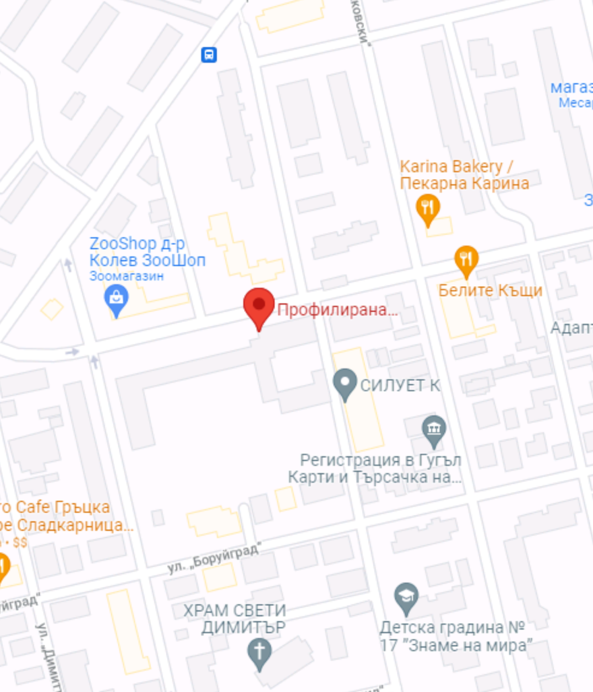

Стара Загора е град с богата културно-историческа, както и природна база.
Чрез посещение на града може да намерите множество интересни забележителности от всякакъв вид.
Има за всеки по нещо!

„Свети Николай Чудотворец“ е православен храм в центъра на Стара Загора, България, под ведомството на Старозагорската епархия.
Към храма в олтара има параклис на свети княз Борис I. Храмовият празник е на 6 декември. До храма има градинка с шадраван със статуя на два пингвина, която е изцяло реновирана през 2013 г. Мястото е една от основните забележителности на Стара Загора.
На мястото на храма е имало църква „Свети Никола“, която е била разрушена по време на Старозагорското клане. На 1 март 1841*г.
Към църквата е открито първото светско училище в Стара Загора.
През 1896 г. започва строителството на новия храм, което е завършено през 1909 г. През 2014 г. е напълно възстановена оградата на храма.


Парк „Митрополит Методий Кусев“ (по-често наричан Аязмото) е парк в Стара Загора.
Оригинално паркът е именуван на старозагорският Митрополит Методи Кусев, който е започнал изграждането му, засявайки първите дървета и самостоятелно грижейки се за тях. Старият митрополитски дом също се намира в парка.
По време на социализма официално е преименуван на Парк „Ленин“, но жителите на града продължават да го наричат Аязмото.
Разполага се на площ от 3500 дка, северно от града, разполага с уникални за България дървесни видове,
а oт 2020 е бил и допълнително ремонтиран.
Самарското знаме, още познато като мемориален комплекс „Бранителите на Стара Загора“ е паметник в Стара Загора.
Той е включен в списъка на
Стоте национални туристически обекта в България.
Открито е на 30 юли 1977 година по случай 100-годишнината от боевете при Стара Загора и Шипка, при които българските опълченци от 1,2,3, 4, 5 и 6-а дружина под командването на руски офицери заедно с руска кавалерия
и артилерия влизат в бой с армията на Сюлейман паша на 31 юли 1877 г!
Забавен факт:
Има точно 100 стъпала заради 100годишнината.


Бедечка е един от най-големите паркове в Стара Загора с площ над 1000 декара!
Създаден е през 1958 г.
През парка протича река Бедечка(ляв приток на река Сазлийка).
В парка се намират 500-годишен чинар (Platanus orientalis) с
диаметър 3,5 m и височина 17 m. както и изкуственото езеро „Загорка“, което е в непосредствена близост до пивоварна „Загорка“(най-голямата
в областта).
В парка са паспортизирани над 2700 дървета и бройката расте!
Но днес този парк е в опасност от унищожаване,
Старозагорската опера, официално Държавна опера Стара Загора, е първата опера в България извън столицата.
Оперното изкуство в Стара Загора води началото си от 27 февруари 1925 г., когато в града е поставена операта „Гергана“.
Появяването на извънстолична опера само няколко години след откриването на оперния театър в София е истинско културно събитие в страната!
През 1991 г. пожар унищожава сградата на операта. Изпепелени са безценни декори и сценични костюми, а кристалните полилеи, внесени специално от Италия, са унищожени.
След дълги години на събиране на средства за възстановяване на сградата, включително чрез дарения от родолюбиви граждани и главно
с финансова помощ от Община
Стара Загора, най-после ремонтът приключва.
На 5 октомври 2010 г. (празника на Стара Загора), с премиера на операта „Кармен“ от Жорж Бизе
отново отваря врати най-красивата оперна сграда в България.


Допълнителни кадри
Допълнителна информация

Email:
stzabelejitelnosti@gmail.com
explrstarazagora@gmail.com
Телефон:
77777777777
8888888888
Адрес: ул. “Августа Траяна” 44
https://www.starazagora.bg/bg/
https://www.starazagora.bg/bg/
https://www.starazagora.bg/bg/
https://www.starazagora.bg/bg/